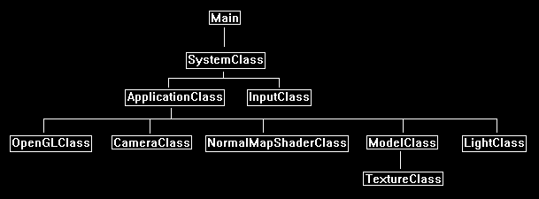

This tutorial will cover how to perform normal mapping in OpenGL 4.0 using GLSL and C++.
The code in this tutorial is based on the code in the previous tutorials.
Normal mapping is a form of bump mapping that is used to produce a 3D effect using just two 2D textures.
In normal mapping we use a special texture called a normal map which is essentially a look up table for surface normals.
Each pixel in the normal map indicates the light direction for the corresponding pixel on the texture color map.
For example, take the following color map:

A normal map for the above texture would look like the following:

Using the normal map with the current light direction for each pixel would then produce the following normal mapped texture:

And if we apply that texture to something like a flat surface sphere, it will now appear to have a 3D surface instead of a flat one:

As you can see the effect is very realistic and the cost of producing it using normal mapping is far less expensive than rendering a high polygon surface to get the same result.
To create a normal map, you usually need someone to produce a 3D model of the surface and then use a tool to convert that 3D model into a normal map.
There are also certain tools that will work with 2D textures to produce a somewhat decent normal map.
The tools that create normal maps take the x, y, z coordinates and translate them to red, green, blue pixels with the intensity of each color indicating the angle of the normal they represent.
The normal of our polygon surface is still calculated the same way as before.
However, the two other normals we need to calculate require the vertex and texture coordinates for that polygon surface.
These two normals are called the tangent and binormal.
The diagram below shows the direction of each normal:

The normal is still pointing straight out towards the viewer.
The tangent and binormal however run across the surface of the polygon with the tangent going along the x-axis and the binormal going along the y-axis.
These two normals then directly translate to the tu and tv texture coordinates of the normal map with the texture U coordinate mapping to the tangent and the texture V coordinate mapping to the binormal.
We will need to do some precalculation to determine the binormal and tangent vectors.
You can do these calculations inside the shader, but it is fairly expensive with all the floating-point math involved.
In this tutorial I will use a function in my C++ code so you can see for yourself and understand the math used in calculating these two extra normal vectors.
Also, most 3D modeling tools will also export these normals as part of your model if they are selected.
Once we have precalculated the tangent and binormal we can use this equation to determine the bump normal at any pixel using the normal map:
bumpNormal = (normalMap.x * input.tangent) + (normalMap.y * input.binormal) + (normalMap.z * input.normal);
Once we have the normal for that pixel we can then calculate against the light direction and multiply by the color value of the pixel from the color texture to get our final result.
Framework
The frame work for this tutorial looks like the following:

We will start the tutorial by looking at the bump map GLSL shader code.
Normalmap.vs
////////////////////////////////////////////////////////////////////////////////
// Filename: normalmap.vs
////////////////////////////////////////////////////////////////////////////////
#version 400
Both the input and output variables now have a tangent and binormal vector for normal map calculations.
/////////////////////
// INPUT VARIABLES //
/////////////////////
in vec3 inputPosition;
in vec2 inputTexCoord;
in vec3 inputNormal;
in vec3 inputTangent;
in vec3 inputBinormal;
//////////////////////
// OUTPUT VARIABLES //
//////////////////////
out vec2 texCoord;
out vec3 normal;
out vec3 tangent;
out vec3 binormal;
///////////////////////
// UNIFORM VARIABLES //
///////////////////////
uniform mat4 worldMatrix;
uniform mat4 viewMatrix;
uniform mat4 projectionMatrix;
////////////////////////////////////////////////////////////////////////////////
// Vertex Shader
////////////////////////////////////////////////////////////////////////////////
void main(void)
{
// Calculate the position of the vertex against the world, view, and projection matrices.
gl_Position = vec4(inputPosition, 1.0f) * worldMatrix;
gl_Position = gl_Position * viewMatrix;
gl_Position = gl_Position * projectionMatrix;
// Store the texture coordinates for the pixel shader.
texCoord = inputTexCoord;
// Calculate the normal vector against the world matrix only and then normalize the final value.
normal = inputNormal * mat3(worldMatrix);
normal = normalize(normal);
Both the input tangent vector and binormal vector are calculated against the world matrix and then normalized the same way the input normal vector is.
// Calculate the tangent vector against the world matrix only and then normalize the final value.
tangent = inputTangent * mat3(worldMatrix);
tangent = normalize(tangent);
// Calculate the binormal vector against the world matrix only and then normalize the final value.
binormal = inputBinormal * mat3(worldMatrix);
binormal = normalize(binormal);
}
Normalmap.ps
////////////////////////////////////////////////////////////////////////////////
// Filename: normalmap.ps
////////////////////////////////////////////////////////////////////////////////
#version 400
/////////////////////
// INPUT VARIABLES //
/////////////////////
in vec2 texCoord;
in vec3 normal;
in vec3 tangent;
in vec3 binormal;
//////////////////////
// OUTPUT VARIABLES //
//////////////////////
out vec4 outputColor;
The normal map shader requires two textures.
The first texture sampler grants access to the color texture.
The second texture sampler grants access to the normal map.
And just like most or our light shaders the direction and color of the light is provided as input for lighting calculations.
///////////////////////
// UNIFORM VARIABLES //
///////////////////////
uniform sampler2D shaderTexture1;
uniform sampler2D shaderTexture2;
uniform vec3 lightDirection;
uniform vec4 diffuseLightColor;
The pixel shader works as we described above with a couple additional lines of code.
First, we sample the pixel from the color texture and the normal map.
We then multiply the normal map value by two and then subtract one to move it into the -1.0 to +1.0 float range.
We have to do this because the sampled value that is presented to us in the 0.0 to +1.0 texture range which only covers half the range we need for bump map normal calculations.
After that we then calculate the bump normal which uses the equation we described earlier.
This bump normal is normalized and then used to determine the light intensity at this pixel by doing a dot product with the light direction.
Once we have the light intensity at this pixel the bump mapping is now done.
We use the light intensity with the light color and texture color to get the final pixel color.
////////////////////////////////////////////////////////////////////////////////
// Pixel Shader
////////////////////////////////////////////////////////////////////////////////
void main(void)
{
vec4 textureColor;
vec4 bumpMap;
vec3 bumpNormal;
vec3 lightDir;
float lightIntensity;
// Sample the pixel color from the texture using the sampler at this texture coordinate location.
textureColor = texture(shaderTexture1, texCoord);
// Sample the pixel from the normal map.
bumpMap = texture(shaderTexture2, texCoord);
// Expand the range of the normal value from (0, +1) to (-1, +1).
bumpMap = (bumpMap * 2.0f) - 1.0f;
// Calculate the normal from the data in the normal map.
bumpNormal = (bumpMap.x * tangent) + (bumpMap.y * binormal) + (bumpMap.z * normal);
// Normalize the resulting bump normal.
bumpNormal = normalize(bumpNormal);
// Invert the light direction for calculations.
lightDir = -lightDirection;
// Calculate the amount of light on this pixel based on the normal map value.
lightIntensity = clamp(dot(bumpNormal, lightDir), 0.0f, 1.0f);
// Determine the final amount of diffuse color based on the diffuse color combined with the light intensity.
outputColor = clamp((diffuseLightColor * lightIntensity), 0.0f, 1.0f);
// Combine the final light color with the texture color.
outputColor = outputColor * textureColor;
}
Normalmapshaderclass.h
The NormalMapShader is similar to the lighting shaders in the previous tutorials with the addition of extra variables to handle normal mapping.
////////////////////////////////////////////////////////////////////////////////
// Filename: normalmapshaderclass.h
////////////////////////////////////////////////////////////////////////////////
#ifndef _NORMALMAPSHADERCLASS_H_
#define _NORMALMAPSHADERCLASS_H_
//////////////
// INCLUDES //
//////////////
#include <iostream>
using namespace std;
///////////////////////
// MY CLASS INCLUDES //
///////////////////////
#include "openglclass.h"
////////////////////////////////////////////////////////////////////////////////
// Class name: NormalMapShaderClass
////////////////////////////////////////////////////////////////////////////////
class NormalMapShaderClass
{
public:
NormalMapShaderClass();
NormalMapShaderClass(const NormalMapShaderClass&);
~NormalMapShaderClass();
bool Initialize(OpenGLClass*);
void Shutdown();
bool SetShaderParameters(float*, float*, float*, float*, float*);
private:
bool InitializeShader(char*, char*);
void ShutdownShader();
char* LoadShaderSourceFile(char*);
void OutputShaderErrorMessage(unsigned int, char*);
void OutputLinkerErrorMessage(unsigned int);
private:
OpenGLClass* m_OpenGLPtr;
unsigned int m_vertexShader;
unsigned int m_fragmentShader;
unsigned int m_shaderProgram;
};
#endif
Normalmapshaderclass.cpp
////////////////////////////////////////////////////////////////////////////////
// Filename: normalmapshaderclass.cpp
////////////////////////////////////////////////////////////////////////////////
#include "normalmapshaderclass.h"
NormalMapShaderClass::NormalMapShaderClass()
{
m_OpenGLPtr = 0;
}
NormalMapShaderClass::NormalMapShaderClass(const NormalMapShaderClass& other)
{
}
NormalMapShaderClass::~NormalMapShaderClass()
{
}
bool NormalMapShaderClass::Initialize(OpenGLClass* OpenGL)
{
char vsFilename[128];
char psFilename[128];
bool result;
// Store the pointer to the OpenGL object.
m_OpenGLPtr = OpenGL;
We load the normalmap.vs and normalmap.ps GLSL shader files here.
// Set the location and names of the shader files.
strcpy(vsFilename, "../Engine/normalmap.vs");
strcpy(psFilename, "../Engine/normalmap.ps");
// Initialize the vertex and pixel shaders.
result = InitializeShader(vsFilename, psFilename);
if(!result)
{
return false;
}
return true;
}
void NormalMapShaderClass::Shutdown()
{
// Shutdown the shader.
ShutdownShader();
// Release the pointer to the OpenGL object.
m_OpenGLPtr = 0;
return;
}
bool NormalMapShaderClass::InitializeShader(char* vsFilename, char* fsFilename)
{
const char* vertexShaderBuffer;
const char* fragmentShaderBuffer;
int status;
// Load the vertex shader source file into a text buffer.
vertexShaderBuffer = LoadShaderSourceFile(vsFilename);
if(!vertexShaderBuffer)
{
return false;
}
// Load the fragment shader source file into a text buffer.
fragmentShaderBuffer = LoadShaderSourceFile(fsFilename);
if(!fragmentShaderBuffer)
{
return false;
}
// Create a vertex and fragment shader object.
m_vertexShader = m_OpenGLPtr->glCreateShader(GL_VERTEX_SHADER);
m_fragmentShader = m_OpenGLPtr->glCreateShader(GL_FRAGMENT_SHADER);
// Copy the shader source code strings into the vertex and fragment shader objects.
m_OpenGLPtr->glShaderSource(m_vertexShader, 1, &vertexShaderBuffer, NULL);
m_OpenGLPtr->glShaderSource(m_fragmentShader, 1, &fragmentShaderBuffer, NULL);
// Release the vertex and fragment shader buffers.
delete [] vertexShaderBuffer;
vertexShaderBuffer = 0;
delete [] fragmentShaderBuffer;
fragmentShaderBuffer = 0;
// Compile the shaders.
m_OpenGLPtr->glCompileShader(m_vertexShader);
m_OpenGLPtr->glCompileShader(m_fragmentShader);
// Check to see if the vertex shader compiled successfully.
m_OpenGLPtr->glGetShaderiv(m_vertexShader, GL_COMPILE_STATUS, &status);
if(status != 1)
{
// If it did not compile then write the syntax error message out to a text file for review.
OutputShaderErrorMessage(m_vertexShader, vsFilename);
return false;
}
// Check to see if the fragment shader compiled successfully.
m_OpenGLPtr->glGetShaderiv(m_fragmentShader, GL_COMPILE_STATUS, &status);
if(status != 1)
{
// If it did not compile then write the syntax error message out to a text file for review.
OutputShaderErrorMessage(m_fragmentShader, fsFilename);
return false;
}
// Create a shader program object.
m_shaderProgram = m_OpenGLPtr->glCreateProgram();
// Attach the vertex and fragment shader to the program object.
m_OpenGLPtr->glAttachShader(m_shaderProgram, m_vertexShader);
m_OpenGLPtr->glAttachShader(m_shaderProgram, m_fragmentShader);
The normal map shader will need to handle our larger model format which now has an extra tangent and binormal vector for each vertex.
// Bind the shader input variables.
m_OpenGLPtr->glBindAttribLocation(m_shaderProgram, 0, "inputPosition");
m_OpenGLPtr->glBindAttribLocation(m_shaderProgram, 1, "inputTexCoord");
m_OpenGLPtr->glBindAttribLocation(m_shaderProgram, 2, "inputNormal");
m_OpenGLPtr->glBindAttribLocation(m_shaderProgram, 3, "inputTangent");
m_OpenGLPtr->glBindAttribLocation(m_shaderProgram, 4, "inputBinormal");
// Link the shader program.
m_OpenGLPtr->glLinkProgram(m_shaderProgram);
// Check the status of the link.
m_OpenGLPtr->glGetProgramiv(m_shaderProgram, GL_LINK_STATUS, &status);
if(status != 1)
{
// If it did not link then write the syntax error message out to a text file for review.
OutputLinkerErrorMessage(m_shaderProgram);
return false;
}
return true;
}
void NormalMapShaderClass::ShutdownShader()
{
// Detach the vertex and fragment shaders from the program.
m_OpenGLPtr->glDetachShader(m_shaderProgram, m_vertexShader);
m_OpenGLPtr->glDetachShader(m_shaderProgram, m_fragmentShader);
// Delete the vertex and fragment shaders.
m_OpenGLPtr->glDeleteShader(m_vertexShader);
m_OpenGLPtr->glDeleteShader(m_fragmentShader);
// Delete the shader program.
m_OpenGLPtr->glDeleteProgram(m_shaderProgram);
return;
}
char* NormalMapShaderClass::LoadShaderSourceFile(char* filename)
{
FILE* filePtr;
char* buffer;
long fileSize, count;
int error;
// Open the shader file for reading in text modee.
filePtr = fopen(filename, "r");
if(filePtr == NULL)
{
return 0;
}
// Go to the end of the file and get the size of the file.
fseek(filePtr, 0, SEEK_END);
fileSize = ftell(filePtr);
// Initialize the buffer to read the shader source file into, adding 1 for an extra null terminator.
buffer = new char[fileSize + 1];
// Return the file pointer back to the beginning of the file.
fseek(filePtr, 0, SEEK_SET);
// Read the shader text file into the buffer.
count = fread(buffer, 1, fileSize, filePtr);
if(count != fileSize)
{
return 0;
}
// Close the file.
error = fclose(filePtr);
if(error != 0)
{
return 0;
}
// Null terminate the buffer.
buffer[fileSize] = '\0';
return buffer;
}
void NormalMapShaderClass::OutputShaderErrorMessage(unsigned int shaderId, char* shaderFilename)
{
long count;
int logSize, error;
char* infoLog;
FILE* filePtr;
// Get the size of the string containing the information log for the failed shader compilation message.
m_OpenGLPtr->glGetShaderiv(shaderId, GL_INFO_LOG_LENGTH, &logSize);
// Increment the size by one to handle also the null terminator.
logSize++;
// Create a char buffer to hold the info log.
infoLog = new char[logSize];
// Now retrieve the info log.
m_OpenGLPtr->glGetShaderInfoLog(shaderId, logSize, NULL, infoLog);
// Open a text file to write the error message to.
filePtr = fopen("shader-error.txt", "w");
if(filePtr == NULL)
{
cout << "Error opening shader error message output file." << endl;
return;
}
// Write out the error message.
count = fwrite(infoLog, sizeof(char), logSize, filePtr);
if(count != logSize)
{
cout << "Error writing shader error message output file." << endl;
return;
}
// Close the file.
error = fclose(filePtr);
if(error != 0)
{
cout << "Error closing shader error message output file." << endl;
return;
}
// Notify the user to check the text file for compile errors.
cout << "Error compiling shader. Check shader-error.txt for error message. Shader filename: " << shaderFilename << endl;
return;
}
void NormalMapShaderClass::OutputLinkerErrorMessage(unsigned int programId)
{
long count;
FILE* filePtr;
int logSize, error;
char* infoLog;
// Get the size of the string containing the information log for the failed shader compilation message.
m_OpenGLPtr->glGetProgramiv(programId, GL_INFO_LOG_LENGTH, &logSize);
// Increment the size by one to handle also the null terminator.
logSize++;
// Create a char buffer to hold the info log.
infoLog = new char[logSize];
// Now retrieve the info log.
m_OpenGLPtr->glGetProgramInfoLog(programId, logSize, NULL, infoLog);
// Open a file to write the error message to.
filePtr = fopen("linker-error.txt", "w");
if(filePtr == NULL)
{
cout << "Error opening linker error message output file." << endl;
return;
}
// Write out the error message.
count = fwrite(infoLog, sizeof(char), logSize, filePtr);
if(count != logSize)
{
cout << "Error writing linker error message output file." << endl;
return;
}
// Close the file.
error = fclose(filePtr);
if(error != 0)
{
cout << "Error closing linker error message output file." << endl;
return;
}
// Pop a message up on the screen to notify the user to check the text file for linker errors.
cout << "Error linking shader program. Check linker-error.txt for message." << endl;
return;
}
We this version of the shader we will just handle directional lighting. And so, we just pass in the light direction and the color of the light.
This can be expanded later on to add other types of lighting as well.
bool NormalMapShaderClass::SetShaderParameters(float* worldMatrix, float* viewMatrix, float* projectionMatrix, float* lightDirection, float* diffuseLightColor)
{
float tpWorldMatrix[16], tpViewMatrix[16], tpProjectionMatrix[16];
int location;
// Transpose the matrices to prepare them for the shader.
m_OpenGLPtr->MatrixTranspose(tpWorldMatrix, worldMatrix);
m_OpenGLPtr->MatrixTranspose(tpViewMatrix, viewMatrix);
m_OpenGLPtr->MatrixTranspose(tpProjectionMatrix, projectionMatrix);
// Install the shader program as part of the current rendering state.
m_OpenGLPtr->glUseProgram(m_shaderProgram);
// Set the world matrix in the vertex shader.
location = m_OpenGLPtr->glGetUniformLocation(m_shaderProgram, "worldMatrix");
if(location == -1)
{
cout << "World matrix not set." << endl;
}
m_OpenGLPtr ->glUniformMatrix4fv(location, 1, false, tpWorldMatrix);
// Set the view matrix in the vertex shader.
location = m_OpenGLPtr->glGetUniformLocation(m_shaderProgram, "viewMatrix");
if(location == -1)
{
cout << "View matrix not set." << endl;
}
m_OpenGLPtr->glUniformMatrix4fv(location, 1, false, tpViewMatrix);
// Set the projection matrix in the vertex shader.
location = m_OpenGLPtr->glGetUniformLocation(m_shaderProgram, "projectionMatrix");
if(location == -1)
{
cout << "Projection matrix not set." << endl;
}
m_OpenGLPtr->glUniformMatrix4fv(location, 1, false, tpProjectionMatrix);
The color texture and normal map are set here.
// Set the first texture in the pixel shader to use the data from the first texture unit.
location = m_OpenGLPtr->glGetUniformLocation(m_shaderProgram, "shaderTexture1");
if(location == -1)
{
cout << "Shader texture 1 not set." << endl;
}
m_OpenGLPtr->glUniform1i(location, 0);
// Set the second texture in the pixel shader to use the data from the second texture unit.
location = m_OpenGLPtr->glGetUniformLocation(m_shaderProgram, "shaderTexture2");
if(location == -1)
{
cout << "Shader texture 2 not set." << endl;
}
m_OpenGLPtr->glUniform1i(location, 1);
Our lighting variables are set here.
// Set the light direction in the pixel shader.
location = m_OpenGLPtr->glGetUniformLocation(m_shaderProgram, "lightDirection");
if(location == -1)
{
cout << "Light direction not set." << endl;
}
m_OpenGLPtr->glUniform3fv(location, 1, lightDirection);
// Set the light color in the pixel shader.
location = m_OpenGLPtr->glGetUniformLocation(m_shaderProgram, "diffuseLightColor");
if(location == -1)
{
cout << "Diffuse light color not set." << endl;
}
m_OpenGLPtr->glUniform4fv(location, 1, diffuseLightColor);
return true;
}
Modelclass.h
////////////////////////////////////////////////////////////////////////////////
// Filename: modelclass.h
////////////////////////////////////////////////////////////////////////////////
#ifndef _MODELCLASS_H_
#define _MODELCLASS_H_
//////////////
// INCLUDES //
//////////////
#include <fstream>
using namespace std;
///////////////////////
// MY CLASS INCLUDES //
///////////////////////
#include "textureclass.h"
////////////////////////////////////////////////////////////////////////////////
// Class Name: ModelClass
////////////////////////////////////////////////////////////////////////////////
class ModelClass
{
private:
The VertexType structure has been changed to now have a tangent and binormal vector.
The ModelType structure has also been changed to have a corresponding tangent and binormal vector.
struct VertexType
{
float x, y, z;
float tu, tv;
float nx, ny, nz;
float tx, ty, tz;
float bx, by, bz;
};
struct ModelType
{
float x, y, z;
float tu, tv;
float nx, ny, nz;
float tx, ty, tz;
float bx, by, bz;
};
The following two structures will be used for calculating the tangent and binormal.
struct TempVertexType
{
float x, y, z;
float tu, tv;
};
struct VectorType
{
float x, y, z;
};
public:
ModelClass();
ModelClass(const ModelClass&);
~ModelClass();
bool Initialize(OpenGLClass*, char*, char*, bool, char*, bool, char*, bool);
void Shutdown();
void Render();
void SetTexture1(unsigned int);
void SetTexture2(unsigned int);
void SetTexture3(unsigned int);
private:
bool InitializeBuffers();
void ShutdownBuffers();
void RenderBuffers();
bool LoadTextures(char*, bool, char*, bool, char*, bool);
void ReleaseTextures();
bool LoadModel(char*);
void ReleaseModel();
We have two new functions for calculating the tangent and binormal vectors for the model.
void CalculateModelVectors();
void CalculateTangentBinormal(TempVertexType, TempVertexType, TempVertexType, VectorType&, VectorType&);
private:
OpenGLClass* m_OpenGLPtr;
int m_vertexCount, m_indexCount;
unsigned int m_vertexArrayId, m_vertexBufferId, m_indexBufferId;
TextureClass* m_Textures;
bool m_texture1Loaded, m_texture2Loaded, m_texture3Loaded;
ModelType* m_model;
};
#endif
Modelclass.cpp
////////////////////////////////////////////////////////////////////////////////
// Filename: modelclass.cpp
////////////////////////////////////////////////////////////////////////////////
#include "modelclass.h"
ModelClass::ModelClass()
{
m_OpenGLPtr = 0;
m_Textures = 0;
m_texture1Loaded = false;
m_texture2Loaded = false;
m_texture3Loaded = false;
m_model = 0;
}
ModelClass::ModelClass(const ModelClass& other)
{
}
ModelClass::~ModelClass()
{
}
bool ModelClass::Initialize(OpenGLClass* OpenGL, char* modelFilename, char* textureFilename1, bool wrap1, char* textureFilename2, bool wrap2,
char* textureFilename3, bool wrap3)
{
bool result;
// Store a pointer to the OpenGL object.
m_OpenGLPtr = OpenGL;
// Load in the model data.
result = LoadModel(modelFilename);
if(!result)
{
return false;
}
After the model data has been loaded, we now call the new CalculateModelVectors function to calculate the tangent and binormal.
// Calculate the tangent and binormal vectors for the model.
CalculateModelVectors();
// Initialize the vertex and index buffer that hold the geometry for the triangle.
result = InitializeBuffers();
if(!result)
{
return false;
}
// Load the textures for this model.
result = LoadTextures(textureFilename1, wrap1, textureFilename2, wrap2, textureFilename3, wrap3);
if(!result)
{
return false;
}
return true;
}
void ModelClass::Shutdown()
{
// Release the textures used for this model.
ReleaseTextures();
// Release the vertex and index buffers.
ShutdownBuffers();
// Release the model data.
ReleaseModel();
// Release the pointer to the OpenGL object.
m_OpenGLPtr = 0;
return;
}
void ModelClass::Render()
{
// Put the vertex and index buffers on the graphics pipeline to prepare them for drawing.
RenderBuffers();
return;
}
bool ModelClass::InitializeBuffers()
{
VertexType* vertices;
unsigned int* indices;
int i;
// Create the vertex array.
vertices = new VertexType[m_vertexCount];
// Create the index array.
indices = new unsigned int[m_indexCount];
The InitializeBuffers function has changed at this point where the vertex array is loaded with data from the ModelType array.
The ModelType array now has tangent and binormal values for the model so they need to be copied into the vertex array which will then be copied into the vertex buffer.
// Load the vertex array and index array with data.
for(i=0; i<m_vertexCount; i++)
{
vertices[i].x = m_model[i].x;
vertices[i].y = m_model[i].y;
vertices[i].z = m_model[i].z;
vertices[i].tu = m_model[i].tu;
vertices[i].tv = m_model[i].tv;
vertices[i].nx = m_model[i].nx;
vertices[i].ny = m_model[i].ny;
vertices[i].nz = m_model[i].nz;
vertices[i].tx = m_model[i].tx;
vertices[i].ty = m_model[i].ty;
vertices[i].tz = m_model[i].tz;
vertices[i].bx = m_model[i].bx;
vertices[i].by = m_model[i].by;
vertices[i].bz = m_model[i].bz;
indices[i] = i;
}
// Allocate an OpenGL vertex array object.
m_OpenGLPtr->glGenVertexArrays(1, &m_vertexArrayId);
// Bind the vertex array object to store all the buffers and vertex attributes we create here.
m_OpenGLPtr->glBindVertexArray(m_vertexArrayId);
// Generate an ID for the vertex buffer.
m_OpenGLPtr->glGenBuffers(1, &m_vertexBufferId);
// Bind the vertex buffer and load the vertex (position and color) data into the vertex buffer.
m_OpenGLPtr->glBindBuffer(GL_ARRAY_BUFFER, m_vertexBufferId);
m_OpenGLPtr->glBufferData(GL_ARRAY_BUFFER, m_vertexCount * sizeof(VertexType), vertices, GL_STATIC_DRAW);
We now have two new vertex array attributes for the tangent vector and the binormal vector.
// Enable the five vertex array attributes.
m_OpenGLPtr->glEnableVertexAttribArray(0); // Vertex position.
m_OpenGLPtr->glEnableVertexAttribArray(1); // Texture coordinates.
m_OpenGLPtr->glEnableVertexAttribArray(2); // Normals
m_OpenGLPtr->glEnableVertexAttribArray(3); // Tangent
m_OpenGLPtr->glEnableVertexAttribArray(4); // Binormal
// Specify the location and format of the position portion of the vertex buffer.
m_OpenGLPtr->glVertexAttribPointer(0, 3, GL_FLOAT, false, sizeof(VertexType), 0);
// Specify the location and format of the texture coordinates portion of the vertex buffer.
m_OpenGLPtr->glVertexAttribPointer(1, 2, GL_FLOAT, false, sizeof(VertexType), (unsigned char*)NULL + (3 * sizeof(float)));
// Specify the location and format of the normal vector portion of the vertex buffer.
m_OpenGLPtr->glVertexAttribPointer(2, 3, GL_FLOAT, false, sizeof(VertexType), (unsigned char*)NULL + (5 * sizeof(float)));
We also specify the location and format of the tangent and binormal.
// Specify the location and format of the tangent vector portion of the vertex buffer.
m_OpenGLPtr->glVertexAttribPointer(3, 3, GL_FLOAT, false, sizeof(VertexType), (unsigned char*)NULL + (8 * sizeof(float)));
// Specify the location and format of the binormal vector portion of the vertex buffer.
m_OpenGLPtr->glVertexAttribPointer(4, 3, GL_FLOAT, false, sizeof(VertexType), (unsigned char*)NULL + (11 * sizeof(float)));
// Generate an ID for the index buffer.
m_OpenGLPtr->glGenBuffers(1, &m_indexBufferId);
// Bind the index buffer and load the index data into it.
m_OpenGLPtr->glBindBuffer(GL_ELEMENT_ARRAY_BUFFER, m_indexBufferId);
m_OpenGLPtr->glBufferData(GL_ELEMENT_ARRAY_BUFFER, m_indexCount* sizeof(unsigned int), indices, GL_STATIC_DRAW);
// Now that the buffers have been loaded we can release the array data.
delete [] vertices;
vertices = 0;
delete [] indices;
indices = 0;
return true;
}
void ModelClass::ShutdownBuffers()
{
// Release the vertex array object.
m_OpenGLPtr->glBindVertexArray(0);
m_OpenGLPtr->glDeleteVertexArrays(1, &m_vertexArrayId);
// Release the vertex buffer.
m_OpenGLPtr->glBindBuffer(GL_ARRAY_BUFFER, 0);
m_OpenGLPtr->glDeleteBuffers(1, &m_vertexBufferId);
// Release the index buffer.
m_OpenGLPtr->glBindBuffer(GL_ELEMENT_ARRAY_BUFFER, 0);
m_OpenGLPtr->glDeleteBuffers(1, &m_indexBufferId);
return;
}
void ModelClass::RenderBuffers()
{
// Bind the vertex array object that stored all the information about the vertex and index buffers.
m_OpenGLPtr->glBindVertexArray(m_vertexArrayId);
// Render the vertex buffer using the index buffer.
glDrawElements(GL_TRIANGLES, m_indexCount, GL_UNSIGNED_INT, 0);
return;
}
bool ModelClass::LoadTextures(char* textureFilename1, bool wrap1, char* textureFilename2, bool wrap2, char* textureFilename3, bool wrap3)
{
// Create and initialize the texture objects.
m_Textures = new TextureClass[3];
if(textureFilename1 != NULL)
{
m_texture1Loaded = m_Textures[0].Initialize(m_OpenGLPtr, textureFilename1, wrap1);
if(!m_texture1Loaded)
{
return false;
}
}
if(textureFilename2 != NULL)
{
m_texture2Loaded = m_Textures[1].Initialize(m_OpenGLPtr, textureFilename2, wrap2);
if(!m_texture2Loaded)
{
return false;
}
}
if(textureFilename3 != NULL)
{
m_texture3Loaded = m_Textures[2].Initialize(m_OpenGLPtr, textureFilename3, wrap3);
if(!m_texture3Loaded)
{
return false;
}
}
return true;
}
void ModelClass::ReleaseTextures()
{
// Release the texture objects.
if(m_Textures)
{
m_Textures[0].Shutdown();
m_Textures[1].Shutdown();
m_Textures[2].Shutdown();
delete [] m_Textures;
m_Textures = 0;
}
return;
}
void ModelClass::SetTexture1(unsigned int textureUnit)
{
// Set the first texture for the model.
if(m_texture1Loaded)
{
m_Textures[0].SetTexture(m_OpenGLPtr, textureUnit);
}
return;
}
void ModelClass::SetTexture2(unsigned int textureUnit)
{
// Set the second texture for the model.
if(m_texture2Loaded)
{
m_Textures[1].SetTexture(m_OpenGLPtr, textureUnit);
}
return;
}
void ModelClass::SetTexture3(unsigned int textureUnit)
{
// Set the third texture for the model.
if(m_texture3Loaded)
{
m_Textures[2].SetTexture(m_OpenGLPtr, textureUnit);
}
return;
}
Although our model format has changed to add a tangent and binormal, we will load models with the same original format as the other tutorials.
All we do in this tutorial is calculate the tangent and binormal after the model has been loaded, and then add it to the model manually.
So, the LoadModel function has stayed the same for this tutorial.
bool ModelClass::LoadModel(char* filename)
{
ifstream fin;
char input;
int i;
// Open the model file.
fin.open(filename);
// If it could not open the file then exit.
if(fin.fail())
{
return false;
}
// Read up to the value of vertex count.
fin.get(input);
while(input != ':')
{
fin.get(input);
}
// Read in the vertex count.
fin >> m_vertexCount;
// Set the number of indices to be the same as the vertex count.
m_indexCount = m_vertexCount;
// Create the model using the vertex count that was read in.
m_model = new ModelType[m_vertexCount];
// Read up to the beginning of the data.
fin.get(input);
while(input != ':')
{
fin.get(input);
}
fin.get(input);
fin.get(input);
// Read in the vertex data.
for(i=0; i<m_vertexCount; i++)
{
fin >> m_model[i].x >> m_model[i].y >> m_model[i].z;
fin >> m_model[i].tu >> m_model[i].tv;
fin >> m_model[i].nx >> m_model[i].ny >> m_model[i].nz;
// Invert the V coordinate to match the OpenGL texture coordinate system.
m_model[i].tv = 1.0f - m_model[i].tv;
}
// Close the model file.
fin.close();
return true;
}
void ModelClass::ReleaseModel()
{
if(m_model)
{
delete [] m_model;
m_model = 0;
}
return;
}
CalculateModelVectors generates the tangent and binormal for the model.
To start it calculates how many faces (triangles) are in the model.
Then for each of those triangles it gets the three vertices and uses that to calculate the tangent and binormal.
After calculating those two new normal vectors, it then saves them back into the model structure.
void ModelClass::CalculateModelVectors()
{
int faceCount, i, index;
TempVertexType vertex1, vertex2, vertex3;
VectorType tangent, binormal;
// Calculate the number of faces in the model.
faceCount = m_vertexCount / 3;
// Initialize the index to the model data.
index = 0;
// Go through all the faces and calculate the the tangent and binormal vectors.
for(i=0; i<faceCount; i++)
{
// Get the three vertices for this face from the model.
vertex1.x = m_model[index].x;
vertex1.y = m_model[index].y;
vertex1.z = m_model[index].z;
vertex1.tu = m_model[index].tu;
vertex1.tv = m_model[index].tv;
index++;
vertex2.x = m_model[index].x;
vertex2.y = m_model[index].y;
vertex2.z = m_model[index].z;
vertex2.tu = m_model[index].tu;
vertex2.tv = m_model[index].tv;
index++;
vertex3.x = m_model[index].x;
vertex3.y = m_model[index].y;
vertex3.z = m_model[index].z;
vertex3.tu = m_model[index].tu;
vertex3.tv = m_model[index].tv;
index++;
// Calculate the tangent and binormal of that face.
CalculateTangentBinormal(vertex1, vertex2, vertex3, tangent, binormal);
// Store the tangent and binormal for this face back in the model structure.
m_model[index-1].tx = tangent.x;
m_model[index-1].ty = tangent.y;
m_model[index-1].tz = tangent.z;
m_model[index-1].bx = binormal.x;
m_model[index-1].by = binormal.y;
m_model[index-1].bz = binormal.z;
m_model[index-2].tx = tangent.x;
m_model[index-2].ty = tangent.y;
m_model[index-2].tz = tangent.z;
m_model[index-2].bx = binormal.x;
m_model[index-2].by = binormal.y;
m_model[index-2].bz = binormal.z;
m_model[index-3].tx = tangent.x;
m_model[index-3].ty = tangent.y;
m_model[index-3].tz = tangent.z;
m_model[index-3].bx = binormal.x;
m_model[index-3].by = binormal.y;
m_model[index-3].bz = binormal.z;
}
return;
}
The CalculateTangentBinormal function takes in three vertices and then calculates and returns the tangent and binormal of those three vertices.
void ModelClass::CalculateTangentBinormal(TempVertexType vertex1, TempVertexType vertex2, TempVertexType vertex3, VectorType& tangent, VectorType& binormal)
{
float vector1[3], vector2[3];
float tuVector[2], tvVector[2];
float den;
float length;
// Calculate the two vectors for this face.
vector1[0] = vertex2.x - vertex1.x;
vector1[1] = vertex2.y - vertex1.y;
vector1[2] = vertex2.z - vertex1.z;
vector2[0] = vertex3.x - vertex1.x;
vector2[1] = vertex3.y - vertex1.y;
vector2[2] = vertex3.z - vertex1.z;
// Calculate the tu and tv texture space vectors.
tuVector[0] = vertex2.tu - vertex1.tu;
tvVector[0] = vertex2.tv - vertex1.tv;
tuVector[1] = vertex3.tu - vertex1.tu;
tvVector[1] = vertex3.tv - vertex1.tv;
// Calculate the denominator of the tangent/binormal equation.
den = 1.0f / (tuVector[0] * tvVector[1] - tuVector[1] * tvVector[0]);
// Calculate the cross products and multiply by the coefficient to get the tangent and binormal.
tangent.x = (tvVector[1] * vector1[0] - tvVector[0] * vector2[0]) * den;
tangent.y = (tvVector[1] * vector1[1] - tvVector[0] * vector2[1]) * den;
tangent.z = (tvVector[1] * vector1[2] - tvVector[0] * vector2[2]) * den;
binormal.x = (tuVector[0] * vector2[0] - tuVector[1] * vector1[0]) * den;
binormal.y = (tuVector[0] * vector2[1] - tuVector[1] * vector1[1]) * den;
binormal.z = (tuVector[0] * vector2[2] - tuVector[1] * vector1[2]) * den;
// Calculate the length of this normal.
length = sqrt((tangent.x * tangent.x) + (tangent.y * tangent.y) + (tangent.z * tangent.z));
// Normalize the normal and then store it
tangent.x = tangent.x / length;
tangent.y = tangent.y / length;
tangent.z = tangent.z / length;
// Calculate the length of this normal.
length = sqrt((binormal.x * binormal.x) + (binormal.y * binormal.y) + (binormal.z * binormal.z));
// Normalize the normal and then store it
binormal.x = binormal.x / length;
binormal.y = binormal.y / length;
binormal.z = binormal.z / length;
return;
}
Applicationclass.h
We have modified the ApplicationClass to accommodate normal mapping.
////////////////////////////////////////////////////////////////////////////////
// Filename: applicationclass.h
////////////////////////////////////////////////////////////////////////////////
#ifndef _APPLICATIONCLASS_H_
#define _APPLICATIONCLASS_H_
/////////////
// GLOBALS //
/////////////
const bool FULL_SCREEN = false;
const bool VSYNC_ENABLED = true;
const float SCREEN_NEAR = 0.3f;
const float SCREEN_DEPTH = 1000.0f;
///////////////////////
// MY CLASS INCLUDES //
///////////////////////
#include "inputclass.h"
#include "openglclass.h"
#include "cameraclass.h"
#include "normalmapshaderclass.h"
#include "modelclass.h"
#include "lightclass.h"
////////////////////////////////////////////////////////////////////////////////
// Class Name: ApplicationClass
////////////////////////////////////////////////////////////////////////////////
class ApplicationClass
{
public:
ApplicationClass();
ApplicationClass(const ApplicationClass&);
~ApplicationClass();
bool Initialize(Display*, Window, int, int);
void Shutdown();
bool Frame(InputClass*);
private:
bool Render(float);
private:
OpenGLClass* m_OpenGL;
CameraClass* m_Camera;
NormalMapShaderClass* m_NormalMapShader;
ModelClass* m_Model;
LightClass* m_Light;
};
#endif
Applicationclass.cpp
////////////////////////////////////////////////////////////////////////////////
// Filename: applicationclass.cpp
////////////////////////////////////////////////////////////////////////////////
#include "applicationclass.h"
ApplicationClass::ApplicationClass()
{
m_OpenGL = 0;
m_Camera = 0;
m_NormalMapShader = 0;
m_Model = 0;
m_Light = 0;
}
ApplicationClass::ApplicationClass(const ApplicationClass& other)
{
}
ApplicationClass::~ApplicationClass()
{
}
bool ApplicationClass::Initialize(Display* display, Window win, int screenWidth, int screenHeight)
{
char modelFilename[128], textureFilename1[128], textureFilename2[128];
bool result;
// Create and initialize the OpenGL object.
m_OpenGL = new OpenGLClass;
result = m_OpenGL->Initialize(display, win, screenWidth, screenHeight, SCREEN_NEAR, SCREEN_DEPTH, VSYNC_ENABLED);
if(!result)
{
cout << "Error: Could not initialize the OpenGL object." << endl;
return false;
}
// Create and initialize the camera object.
m_Camera = new CameraClass;
m_Camera->SetPosition(0.0f, 0.0f, -5.0f);
m_Camera->Render();
The new NormalMapShaderClass is created here.
// Create and initialize the normal map shader object.
m_NormalMapShader = new NormalMapShaderClass;
result = m_NormalMapShader->Initialize(m_OpenGL);
if(!result)
{
cout << "Error: Could not initialize the normal map object." << endl;
return false;
}
We will load the cube model.
// Set the file name of the model.
strcpy(modelFilename, "../Engine/data/cube.txt");
Here we load the stone color texture and the new normal map texture.
// Set the file name of the textures.
strcpy(textureFilename1, "../Engine/data/stone01.tga");
strcpy(textureFilename2, "../Engine/data/normal01.tga");
// Create and initialize the model object.
m_Model = new ModelClass;
result = m_Model->Initialize(m_OpenGL, modelFilename, textureFilename1, true, textureFilename2, true, NULL, true);
if(!result)
{
return false;
}
We also create a basic directional white light for the normal mapping to work.
// Create and initialize the light object.
m_Light = new LightClass;
m_Light->SetDiffuseColor(1.0f, 1.0f, 1.0f, 1.0f);
m_Light->SetDirection(0.0f, 0.0f, 1.0f);
return true;
}
The Shutdown function will release our new NormalMapShaderClass and LightClass objects.
void ApplicationClass::Shutdown()
{
// Release the light object.
if(m_Light)
{
delete m_Light;
m_Light = 0;
}
// Release the model object.
if(m_Model)
{
m_Model->Shutdown();
delete m_Model;
m_Model = 0;
}
// Release the normal map shader object.
if(m_NormalMapShader)
{
m_NormalMapShader->Shutdown();
delete m_NormalMapShader;
m_NormalMapShader = 0;
}
// Release the camera object.
if(m_Camera)
{
delete m_Camera;
m_Camera = 0;
}
// Release the OpenGL object.
if(m_OpenGL)
{
m_OpenGL->Shutdown();
delete m_OpenGL;
m_OpenGL = 0;
}
return;
}
bool ApplicationClass::Frame(InputClass* Input)
{
static float rotation = 360.0f;
bool result;
// Check if the escape key has been pressed, if so quit.
if(Input->IsEscapePressed() == true)
{
return false;
}
// Update the rotation variable each frame.
rotation -= 0.0174532925f * 1.0f;
if(rotation <= 0.0f)
{
rotation += 360.0f;
}
// Render the graphics scene.
result = Render(rotation);
if(!result)
{
return false;
}
return true;
}
bool ApplicationClass::Render(float rotation)
{
float worldMatrix[16], viewMatrix[16], projectionMatrix[16];
float diffuseLightColor[4], lightDirection[3];
bool result;
// Clear the buffers to begin the scene.
m_OpenGL->BeginScene(0.0f, 0.0f, 0.0f, 1.0f);
// Get the world, view, and projection matrices from the opengl and camera objects.
m_OpenGL->GetWorldMatrix(worldMatrix);
m_Camera->GetViewMatrix(viewMatrix);
m_OpenGL->GetProjectionMatrix(projectionMatrix);
// Rotate the world matrix by the rotation value so that the triangle will spin.
m_OpenGL->MatrixRotationY(worldMatrix, rotation);
Get the light attributes to send into the normal map shader.
// Get the light properties.
m_Light->GetDirection(lightDirection);
m_Light->GetDiffuseColor(diffuseLightColor);
Set the matrices and light parameters in the normal map shader.
// Set the normal map shader as active and set its parameters.
result = m_NormalMapShader->SetShaderParameters(worldMatrix, viewMatrix, projectionMatrix, lightDirection, diffuseLightColor);
if(!result)
{
return false;
}
Set the color texture and the normal map in the shader.
// Set the color texture and normal map in the pixel shader.
m_Model->SetTexture1(0);
m_Model->SetTexture2(1);
Now render the cube model using the normal map shader.
// Render the model using the normal map shader.
m_Model->Render();
// Present the rendered scene to the screen.
m_OpenGL->EndScene();
return true;
}
Summary
With the normal mapping you can create very detailed 3D scenes using just 2D textures.

To Do Exercises
1. Recompile and run the program. You should see a normal mapped rotating cube. Press escape to quit.
2. Use the sphere model from the earlier tutorials.
3. Return just the lighting value with no texture base color to see just the normal map lighting effect.
4. Move the camera and light position around to see the effect from different angles.
Source Code
Source Code and Data Files: gl4linuxtut20_src.tar.gz